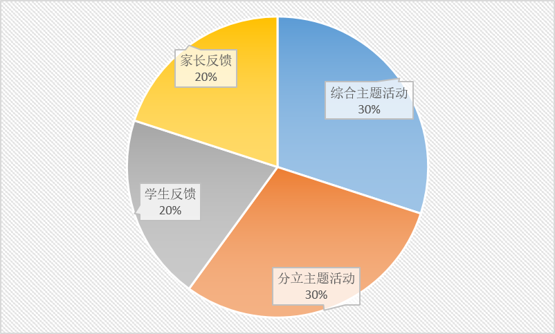

刘晓慧
（一）起点测评
起点测评包括主题活动、学生反馈和家长反馈三种测评形式，由于主题活动包括综合主题活动和分立主题活动，因此起点测评共包括四个具体测评项目。其中，每个项目的测评结果均以1、2、3——三个等级的形式进行展示。将每位学生的综合智能总分设定为10分，基于多元智能理论创始人霍华德•加德纳(Howard Gardner)教授的论断：“评估多元智能的最好方法是观察孩子在与多元智能相关的各种学习任务活动中的真实表现”，四项活动结果所占权重为3:3:2:2，如图2-1所示。那么，学生智能总分得分公式为：
S=S1+S2+(S3+S4)*2/3
式中 S- 个人单项智能总分
S1- 综合主题项目得分
S2- 分立主题项目得分
S3- 学生反馈项目得分
S4- 家长反馈项目得分

-
综合主题活动
- 参与主体：学生3-5人一组和一名观察员或老师
- 活动过程：观察员或老师组织学生观看短视频后，然后引导学生以小组为单位针对不同智能主题进行自由讨论，活动主题可参考表2-1.。
- 活动评价：教师根据每个学生的回答进行记录并打分（记录表如表2-2所示），共分为三个等级：感兴趣且表现积极，3分；反应和表现一般，2分；不感兴趣且表现消极，1分。
- 配套设施：每个小组一台视频播放设备
- 补充说明：视频短片可选择奥斯卡最佳短片和公益广告等。另外，教师最好将小组讨论进行录音以便后期分析研究。
表2-1 综合主题活动设计
| 目标智能 |
活动设计 |
| 言语-语言 |
视频中哪些台词让你印象深刻？你是否能尝试给短片配部分台词？ |
| 逻辑-数理 |
你认为故事接下来还会发生什么？为什么？你能分析一下视频中角色有哪些特点以及相同点或不同点？ |
| 视觉-空间 |
视频中哪些场景或画面让你印象深刻？视频中哪些颜色或符号让你印象深刻？ |
| 身体-动觉 |
视频中哪些动作场景让你印象深刻？你是否能再现部分动作场景？ |
| 音乐-节奏 |
视频中哪些音乐或旋律让你印象深刻？你认为视频中配乐的感觉是快乐的，还是忧伤的，还是…？ |
| 人际交往 |
你觉得视频中各角色的关系是什么？你会选择谁作为自己的好朋友？为什么？ |
| 自知-自省 |
你观看视频后最大的感受是什么？你觉得自己跟视频中的角色有什么相同点和不同点吗？ |
| 自然观察 |
视频中哪些自然景观让你印象深刻？视频中的景观有没有让你联想到你见过的或最想去的地方？ |
-
分立主题活动
- 参与主体：一名学生和一名观察员或老师
- 活动过程：观察员或老师组织学生观看短视频后，然后引导学生以小组为单位针对不同智能主题进行自由讨论。
- 活动评价：教师按照评估参考的详细说明针对不同目标智能进行打分，分别有1分、2分和3分三个等级分值。
- 配套设施：教师需根据具体活动做出相应辅助工具的准备（见备注）和录音笔。
- 补充说明：每个目标智能的活动均设计了五个相关活动，并附有评估参考和辅助工具，难度系数依次从★到★★★★★进行排列，教师可以根据具体情况进行选择，同时也可以根据主客观条件的具体情况对已有活动进行适当修改或完善。